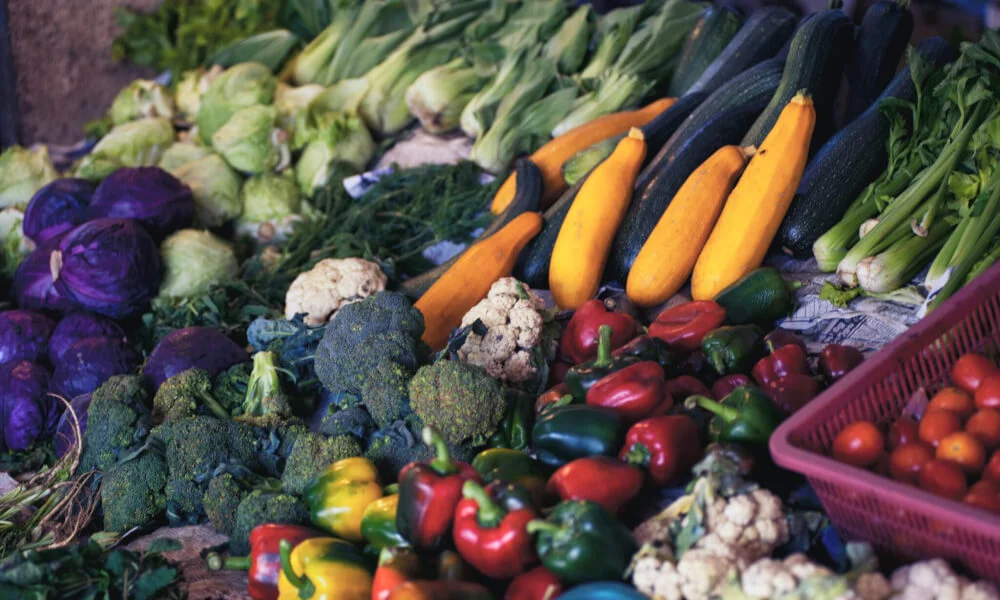
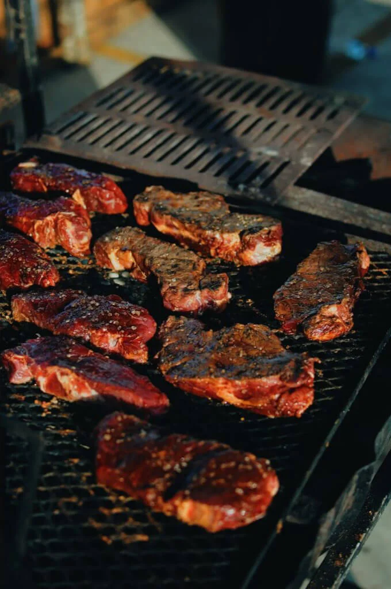
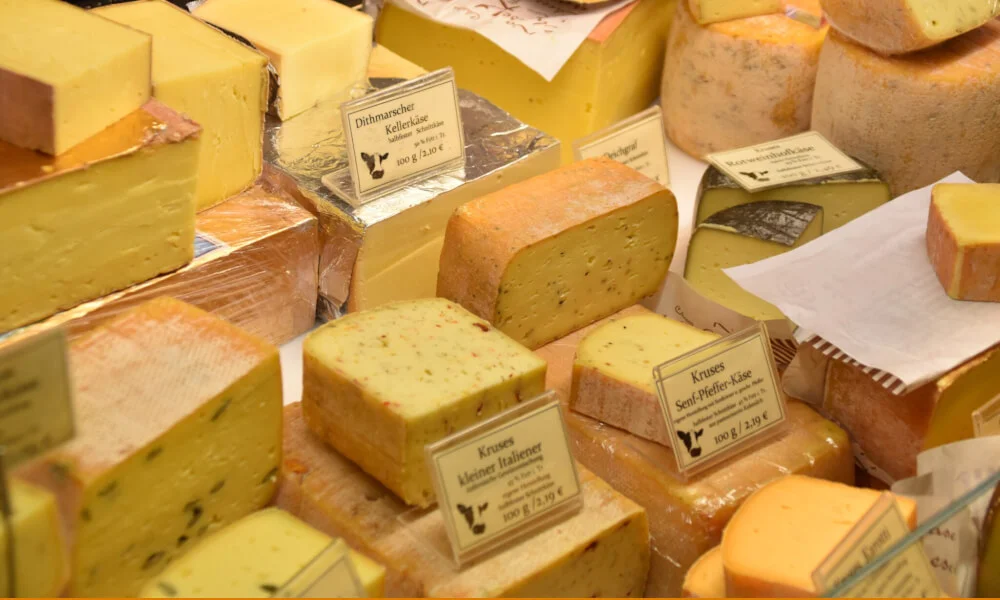
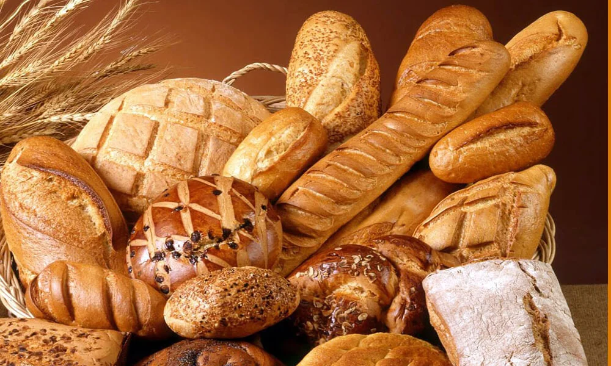
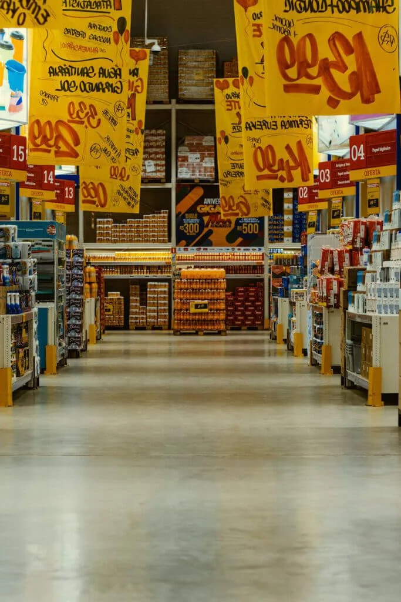
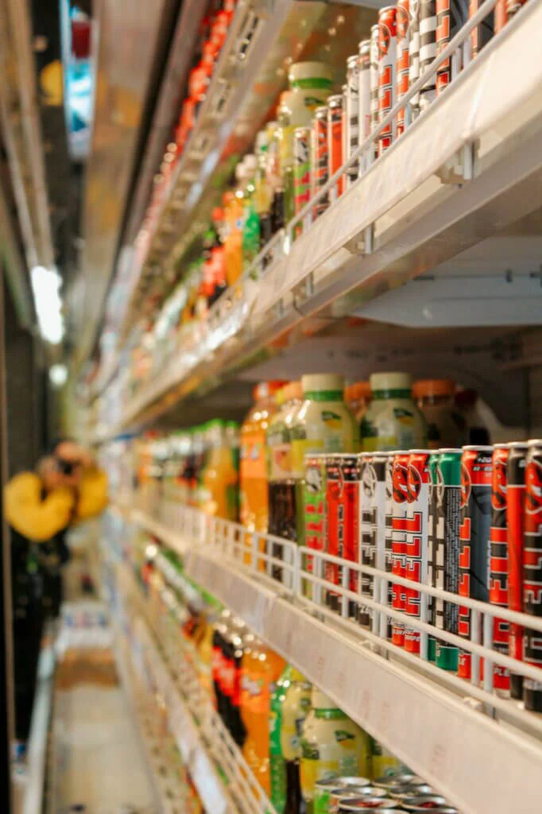
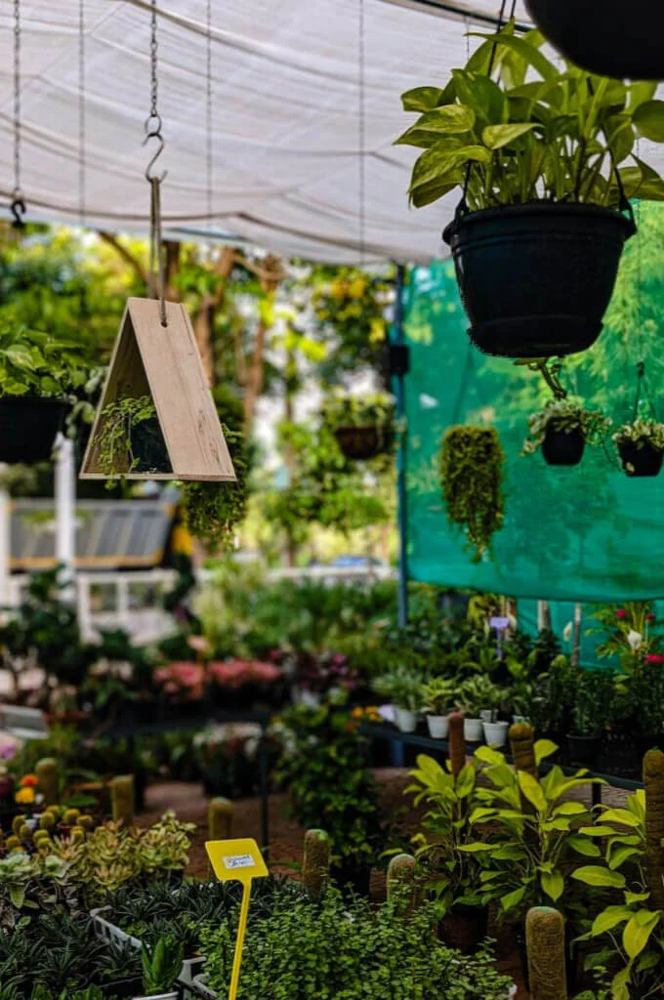

Fresh department
Fruit & Vegetables
Seasonal fruit, crisp vegetables, herbs and produce chosen for freshness, colour and flavour.
Fresh food, quality ingredients and useful everyday products—all conveniently available in store.
Selection and availability may differ by branch and season. Contact your nearest store to confirm a specific item.

Seasonal fruit, crisp vegetables, herbs and produce chosen for freshness, colour and flavour.

Beef, mutton, chicken, seafood and braai-ready favourites sourced from trusted suppliers.

Milk, cheeses and everyday deli essentials for breakfasts, lunches and family meals.

Fresh bread and baked favourites for the table, lunchbox or weekend gathering.

Quality pantry staples, spices and practical everyday products to complete your shop.

A selection of cold drinks, juices and refreshing options for home, work or entertaining.
Convenient hydration choices for daily use, events, travel and active households.

Useful seasonal garden products and practical additions for your home environment.
Nutritious food choices to help keep four-legged family members healthy and happy.
All three stores are open seven days a week.